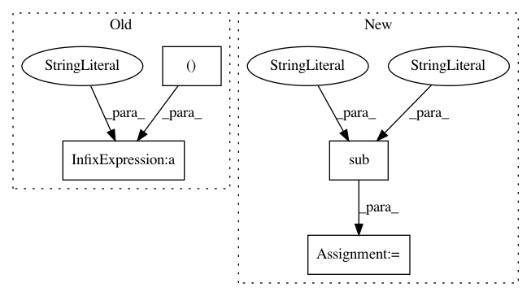

32234b97cd894b0849f5d151601ea4051cd1b123,pynets/core/utils.py,,collect_pandas_df_make,#Any#Any#Any#Any#,912
Before Change
net_pick_out_path = "%s%s%s%s%s%s%s" % (subject_path, "/", str(ID), "_", name_of_network_pickle,
"%s" % ("_" + network if network is not None else ""), "_mean")
df_concatted_final.to_pickle(net_pick_out_path)
df_concatted_final.to_csv("%s%s" % (net_pick_out_path, ".csv"), index=False)
except RuntimeWarning:
print("%s%s%s" % ("\nWARNING: DATAFRAME CONCATENATION FAILED FOR ", str(ID), "!\n"))
pass
After Change
np.array(df_summary_nonan["thr"]).astype("float64"))
meta[thr_set]["auc_dataframe"] = df_summary_auc
auc_outfile = auc_dir + list(set([re.sub(r"thr\-\d+\.*\d+", "", i).replace("neat", "auc") for i in models_grouped[thr_set]]))[0]
df.to_csv(auc_outfile, index=False)
try:
summary_dir = subject_path + "/netmetrics/summary/"
In pattern: SUPERPATTERN
Frequency: 3
Non-data size: 4
Instances
Project Name: dPys/PyNets
Commit Name: 32234b97cd894b0849f5d151601ea4051cd1b123
Time: 2019-10-12
Author: dpisner@utexas.edu
File Name: pynets/core/utils.py
Class Name:
Method Name: collect_pandas_df_make
Project Name: mynlp/ccg2lambda
Commit Name: 66a06524eba0b22d14204baeb2ca6d4c9db7d1d0
Time: 2017-05-12
Author: pascual@nii.ac.jp
File Name: scripts/semantic_types.py
Class Name:
Method Name: convert_coq_to_nltk_type
Project Name: pantsbuild/pants
Commit Name: 7d87ef324bd935d204930c8d56546a3d55d0d3c5
Time: 2015-03-08
Author: zundel@squareup.com
File Name: src/python/pants/base/workunit.py
Class Name: WorkUnit
Method Name: output